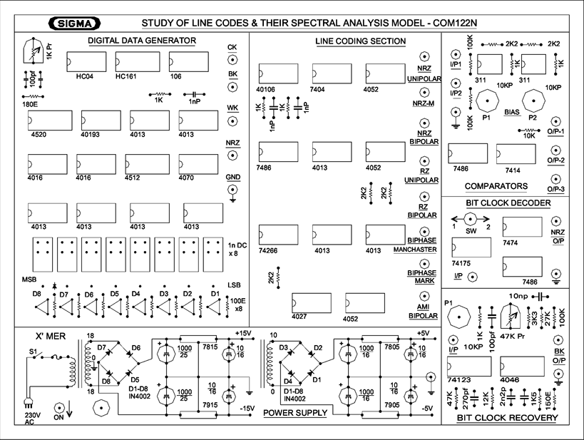

SIGMA
STUDY OF LINE CODES & THEIR SPECTRAL ANALYSIS
MODEL - COM122L • DIGITAL COMMUNICATION PRACTICALS
⚡ 230V AC, 50 Hz
🖥 8-Bit Word Generator
⏱ 10 KHz Word Clock
Circuit Valid
🔌 Test Instrument Probe Dock
Patch cords route signals directly from kit terminals to virtual test equipment
DSO CH1
CLK / SYNC
DSO CH2
AMI BIPOLAR
SPECTRUM IN
0 - 80 kHz
DEC IN
RECEIVER

D8
D7
D6
D5
D4
D3
D2
D1
Timebase (SEC/DIV)
1.0 ms/div
Scale (VOLTS/DIV)
1.0 V/div
8-Bit Presets (COM122L Manual)
DC Component (Bias)
0.000 V
Transformer Baseline Drift
Bit Transitions
4 Edges
Word Transition Density
Clock Synchronization
Moderate
10 kHz PLL Self-Clocking
Decoder Round-Trip
Matched (100%)
Experiment 1 Reconstruction
EXPERIMENT 2: To observe spectrum of different line codes on Spectrum Analyzer.
Compare the Power Spectral Density (PSD) $S(f)$, first null frequency, DC power component, and bandwidth requirement for each of the 6 line codes generated by the 10 KHz clock.
Compare the Power Spectral Density (PSD) $S(f)$, first null frequency, DC power component, and bandwidth requirement for each of the 6 line codes generated by the 10 KHz clock.
| Line Code Format | Theoretical PSD Formula S(f) | First Null | Main Lobe BW | DC Component | Efficiency | Action |
|---|